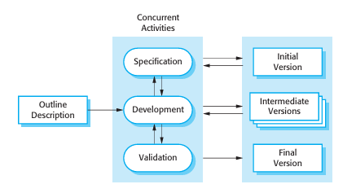
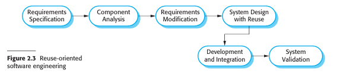
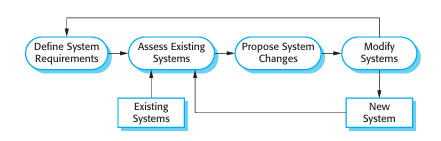
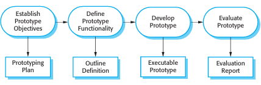
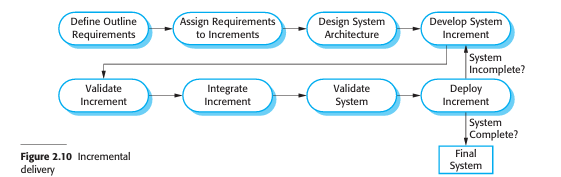
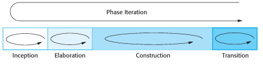
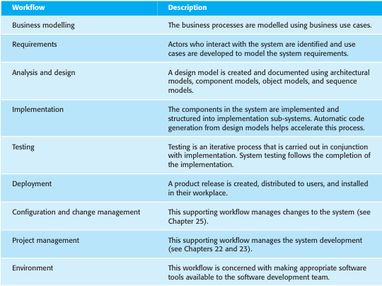

The objective of this chapter is to introduce you to the idea of a software process — a coherent set of activities for software production. When you have read this chapter you will:
understand the concepts of software processes and software process models;
have been introduced to three generic software process models and when they might be used;
know about the fundamental process activities of software requirements engineering, software development, testing, and evolution;
understand why processes should be organized to cope with changes in the software requirements and design;
understand how the Rational Unified Process integrates good software engineering practice to create adaptable software processes.
Introduction
A software process is a set of related activities that leads to the production of a software product. These activities may involve the development of software from scratch in a standard programming language like Java or C. However, business applications are not necessarily developed in this way. New business software is now often developed by extending and modifying existing systems or by configuring and integrating off-the-shelf software or system components.
There are many different software processes but all must include four activities that are fundamental to software engineering:
Software specification — The functionality of the software and constraints on its operation must be defined.
Software design and implementation — The software to meet the specification must be produced.
Software validation — The software must be validated to ensure that it does what the customer wants.
Software evolution— The software must evolve to meet changing customer needs.
In some form, these activities are part of all software processes. In practice, of
course, they are complex activities in themselves and include sub-activities such as
requirements validation, architectural design, unit testing, etc. There are also support
ing process activities such as documentation and software configuration management.
When we describe and discuss processes, we usually talk about the activities in
these processes such as specifying a data model, designing a user interface, etc., and
the ordering of these activities. However, as well as activities, process descriptions
may also include:
Products, which are the outcomes of a process activity. For example, the out
come of the activity of architectural design may be a model of the software
architecture.
Roles, which reflect the responsibilities of the people involved in the process.
Examples of roles are project manager, configuration manager, programmer, etc.
Pre- and post-conditions, which are statements that are true before and after a
process activity has been enacted or a product produced. For example, before
architectural design begins, a pre-condition may be that all requirements have
been approved by the customer; after this activity is finished, a post-condition
might be that the UML models describing the architecture have been reviewed.
Software processes are complex and, like all intellectual and creative processes,
rely on people making decisions and judgments. There is no ideal process and most
organizations have developed their own software development processes. Processes
have evolved to take advantage of the capabilities of the people in an organization
and the specific characteristics of the systems that are being developed. For some
systems, such as critical systems, a very structured development process is required.
For business systems, with rapidly changing requirements, a less formal, flexible
process is likely to be more effective.
Sometimes, software processes are categorized as either plan-driven or agile
processes. Plan-driven processes are processes where all of the process activities are
planned in advance and progress is measured against this plan. In agile processes,
which I discuss in Chapter 3, planning is incremental and it is easier to change the
process to reflect changing customer requirements. As Boehm and Turner (2003)
discuss, each approach is suitable for different types of software. Generally, you
need to find a balance between plan-driven and agile processes.
Although there is no ‘ideal’ software process, there is scope for improving the
software process in many organizations. Processes may include outdated techniques
or may not take advantage of the best practice in industrial software engineering.
Indeed, many organizations still do not take advantage of software engineering
methods in their software development.
Software processes can be improved by process standardization where the diver
sity in software processes across an organization is reduced. This leads to improved
communication and a reduction in training time, and makes automated process sup
port more economical. Standardization is also an important first step in introducing
new software engineering methods and techniques and good software engineering
practice. I discuss software process improvement in more detail in Chapter 26.
2.1 Software Process Models
As I explained in Chapter 1, a software process model is a simplified representation
of a software process. Each process model represents a process from a particular per
spective, and thus provides only partial information about that process. For example,
a process activity model shows the activities and their sequence but may not show
the roles of the people involved in these activities. In this section, I introduce a num
ber of very general process models (sometimes called ‘process paradigms’) and
present these from an architectural perspective. That is, we see the framework of the
process but not the details of specific activities.
These generic models are not definitive descriptions of software processes. Rather,
they are abstractions of the process that can be used to explain different approaches to
software development. You can think of them as process frameworks that may be
extended and adapted to create more specific software engineering processes.
The process models that I cover here are:
The waterfall model This takes the fundamental process activities of specifica
tion, development, validation, and evolution and represents them as separate
process phases such as requirements specification, software design, implemen
tation, testing, and so on.
Incremental development This approach interleaves the activities of specifica
tion, development, and validation. The system is developed as a series of versions
(increments), with each version adding functionality to the previous version.
Reuse-oriented software engineering This approach is based on the existence of
a significant number of reusable components. The system development process
focuses on integrating these components into a system rather than developing
them from scratch.
These models are not mutually exclusive and are often used together, especially
for large systems development. For large systems, it makes sense to combine some
of the best features of the waterfall and the incremental development models. You
need to have information about the essential system requirements to design a soft
ware architecture to support these requirements. You cannot develop this incremen
tally. Sub-systems within a larger system may be developed using different
approaches. Parts of the system that are well understood can be specified and devel
oped using a waterfall-based process. Parts of the system which are difficult to
specify in advance, such as the user interface, should always be developed using an
incremental approach.
2.1.1 The Waterfall Model
The first published model of the software development process was derived from
more general system engineering processes (Royce, 1970). This model is illustrated
in Figure 2.1. Because of the cascade from one phase to another, this model is known
as the ‘waterfall model’ or software life cycle. The waterfall model is an example of
a plan-driven process—in principle, you must plan and schedule all of the process
activities before starting work on them.
The principal stages of the waterfall model directly reflect the fundamental devel
opment activities:
Requirements analysis and definition The system’s services, constraints, and
goals are established by consultation with system users. They are then defined
in detail and serve as a system specification.
System and software design The systems design process allocates the require
ments to either hardware or software systems by establishing an overall system
architecture. Software design involves identifying and describing the fundamen
tal software system abstractions and their relationships
Implementation and unit testing During this stage, the software design is real
ized as a set of programs or program units. Unit testing involves verifying that
each unit meets its specification.
Integration and system testing The individual program units or programs
are integrated and tested as a complete system to ensure that the software
requirements have been met. After testing, the software system is delivered to
the customer.
Operation and maintenance Normally (although not necessarily), this is the
longest life cycle phase. The system is installed and put into practical use.
Maintenance involves correcting errors which were not discovered in earlier
stages of the life cycle, improving the implementation of system units and
enhancing the system’s services as new requirements are discovered.
In principle, the result of each phase is one or more documents that are approved
(‘signed off’). The following phase should not start until the previous phase has fin
ished. In practice, these stages overlap and feed information to each other. During
design, problems with requirements are identified. During coding, design problems
are found and so on. The software process is not a simple linear model but involves
feedback from one phase to another. Documents produced in each phase may then
have to be modified to reflect the changes made.
Because of the costs of producing and approving documents, iterations can be
costly and involve significant rework. Therefore, after a small number of iterations,
it is normal to freeze parts of the development, such as the specification, and to con
tinue with the later development stages. Problems are left for later resolution,
ignored, or programmed around. This premature freezing of requirements may mean
that the system won’t do what the user wants. It may also lead to badly structured
systems as design problems are circumvented by implementation tricks.
During the final life cycle phase (operation and maintenance) the software is put
into use. Errors and omissions in the original software requirements are discovered.
Program and design errors emerge and the need for new functionality is identified.
The system must therefore evolve to remain useful. Making these changes (software
maintenance) may involve repeating previous process stages.
The waterfall model is consistent with other engineering process models and docu
mentation is produced at each phase. This makes the process visible so managers can
monitor progress against the development plan. Its major problem is the inflexible par
titioning of the project into distinct stages. Commitments must be made at an early stage
in the process, which makes it difficult to respond to changing customer requirements.
In principle, the waterfall model should only be used when the requirements are
well understood and unlikely to change radically during system development.
However, the waterfall model reflects the type of process used in other engineering
projects. As is easier to use a common management model for the whole project,
software processes based on the waterfall model are still commonly used.
An important variant of the waterfall model is formal system development, where
a mathematical model of a system specification is created. This model is then
refined, using mathematical transformations that preserve its consistency, into exe
cutable code. Based on the assumption that your mathematical transformations are
correct, you can therefore make a strong argument that a program generated in this
way is consistent with its specification.
Formal development processes, such as that based on the B method (Schneider,
2001; Wordsworth, 1996) are particularly suited to the development of systems that
have stringent safety, reliability, or security requirements. The formal approach sim
plifies the production of a safety or security case. This demonstrates to customers or
regulators that the system actually meets its safety or security requirements.
Processes based on formal transformations are generally only used in the devel
opment of safety-critical or security-critical systems. They require specialized
expertise. For the majority of systems this process does not offer significant cost
benefits over other approaches to system development.
2.1.2 Incremental Development
Incremental development is based on the idea of developing an initial implementa
tion, exposing this to user comment and evolving it through several versions until an
adequate system has been developed (Figure 2.2). Specification, development, and validation
activities are interleaved rather than separate, with rapid feedback across
activities.

Incremental software development, which is a fundamental part of agile
approaches, is better than a waterfall approach for most business, e-commerce, and
personal systems. Incremental development reflects the way that we solve prob
lems. We rarely work out a complete problem solution in advance but move toward
a solution in a series of steps, backtracking when we realize that we have made a
mistake. By developing the software incrementally, it is cheaper and easier to make
changes in the software as it is being developed.
Each increment or version of the system incorporates some of the functionality
that is needed by the customer. Generally, the early increments of the system include
the most important or most urgently required functionality. This means that the
customer can evaluate the system at a relatively early stage in the development to see
if it delivers what is required. If not, then only the current increment has to be
changed and, possibly, new functionality defined for later increments.
Incremental development has three important benefits, compared to the waterfall
model:
The cost of accommodating changing customer requirements is reduced. The
amount of analysis and documentation that has to be redone is much less than is
required with the waterfall model.
It is easier to get customer feedback on the development work that has been
done. Customers can comment on demonstrations of the software and see how
much has been implemented. Customers find it difficult to judge progress from
software design documents.
More rapid delivery and deployment of useful software to the customer is possi
ble, even if all of the functionality has not been included. Customers are able to
use and gain value from the software earlier than is possible with a waterfall
process.
Incremental development in some form is now the most common approach for the
development of application systems. This approach can be either plan-driven, agile,
or, more usually, a mixture of these approaches. In a plan-driven approach, the system
increments are identified in advance; if an agile approach is adopted, the early incre
ments are identified but the development of later increments depends on progress and
customer priorities.
From a management perspective, the incremental approach has two problems:
The process is not visible. Managers need regular deliverables to measure
progress. If systems are developed quickly, it is not cost-effective to produce
documents that reflect every version of the system.
System structure tends to degrade as new increments are added. Unless time and
money is spent on refactoring to improve the software, regular change tends to
corrupt its structure. Incorporating further software changes becomes increas
ingly difficult and costly.
The problems of incremental development become particularly acute for large,
complex, long-lifetime systems, where different teams develop different parts of the
system. Large systems need a stable framework or architecture and the responsibili
ties of the different teams working on parts of the system need to be clearly defined
with respect to that architecture. This has to be planned in advance rather than devel
oped incrementally.
The process is not visible. Managers need regular deliverables to measure
You can develop a system incrementally and expose it to customers for comment,
without actually delivering it and deploying it in the customer’s environment.
Incremental delivery and deployment means that the software is used in real, opera
tional processes. This is not always possible as experimenting with new software can
disrupt normal business processes. I discuss the advantages and disadvantages of incre
mental delivery in Section 2.3.2
Reuse-oriented Software Engineering

In the majority of software projects, there is some software reuse. This often happens
informally when people working on the project know of designs or code that are
similar to what is required. They look for these, modify them as needed, and incor
porate them into their system.
This informal reuse takes place irrespective of the development process that is
used. However, in the 21st century, software development processes that focus on the
reuse of existing software have become widely used. Reuse-oriented approaches rely
on a large base of reusable software components and an integrating framework for
the composition of these components. Sometimes, these components are systems in
their own right (COTS or commercial off-the-shelf systems) that may provide spe
cific functionality such as word processing or a spreadsheet.
A general process model for reuse-based development is shown in Figure 2.3.
Although the initial requirements specification stage and the validation stage are
comparable with other software processes, the intermediate stages in a reuse
oriented process are different. These stages are:
Component analysis Given the requirements specification, a search is made for
components to implement that specification. Usually, there is no exact match and
the components that may be used only provide some of the functionality required.
Requirements modification During this stage, the requirements are analyzed using
information about the components that have been discovered. They are then mod
ified to reflect the available components. Where modifications are impossible, the
component analysis activity may be re-entered to search for alternative solutions.
System design with reuse During this phase, the framework of the system is
designed or an existing framework is reused. The designers take into account the
components that are reused and organize the framework to cater for this. Some
new software may have to be designed if reusable components are not available.
Development and integration Software that cannot be externally procured is
developed, and the components and COTS systems are integrated to create the
new system. System integration, in this model, may be part of the development
process rather than a separate activity.
There are three types of software component that may be used in a reuse-oriented
process:
Web services that are developed according to service standards and which are
available for remote invocation.
Collections of objects that are developed as a package to be integrated with a
component framework such as .NET or J2EE.
Stand-alone software systems that are configured for use in a particular
environment.
Reuse-oriented software engineering has the obvious advantage of reducing the
amount of software to be developed and so reducing cost and risks. It usually also
leads to faster delivery of the software. However, requirements compromises are
inevitable and this may lead to a system that does not meet the real needs of users.
Furthermore, some control over the system evolution is lost as new versions of the
reusable components are not under the control of the organization using them.
Software reuse is very important and I have dedicated several chapters in the third
part of the book to this topic. General issues of software reuse and COTS reuse are
covered in Chapter 16, component-based software engineering in Chapters 17 and
18, and service-oriented systems in Chapter 19
2.2 Process activities
Real software processes are interleaved sequences of technical, collaborative, and
managerial activities with the overall goal of specifying, designing, implementing,
and testing a software system. Software developers use a variety of different software
tools in their work. Tools are particularly useful for supporting the editing of different
types of document and for managing the immense volume of detailed information
that is generated in a large software project.
The four basic process activities of specification, development, validation, and evo
lution are organized differently in different development processes. In the waterfall
model, they are organized in sequence, whereas in incremental development they are
interleaved. How these activities are carried out depends on the type of software,
people, and organizational structures involved. In extreme programming, for example,
specifications are written on cards. Tests are executable and developed before the
program itself. Evolution may involve substantial system restructuring or refactoring.
2.2.1 Software specification
Software specification or requirements engineering is the process of understanding
and defining what services are required from the system and identifying the con
straints on the system’s operation and development. Requirements engineering is a
particularly critical stage of the software process as errors at this stage inevitably
lead to later problems in the system design and implementation.
The requirements engineering process (Figure 2.4) aims to produce an agreed
requirements document that specifies a system satisfying stakeholder requirements.
Requirements are usually presented at two levels of detail. End-users and customers
need a high-level statement of the requirements; system developers need a more
detailed system specification.
There are four main activities in the requirements engineering process:
Feasibility study An estimate is made of whether the identified user needs may be
satisfied using current software and hardware technologies. The study considers
whether the proposed system will be cost-effective from a business point of view
and if it can be developed within existing budgetary constraints. A feasibility
study should be relatively cheap and quick. The result should inform the decision
of whether or not to go ahead with a more detailed analysis.
Requirements elicitation and analysis This is the process of deriving the system
requirements through observation of existing systems, discussions with poten
tial users and procurers, task analysis, and so on. This may involve the develop
ment of one or more system models and prototypes. These help you understand
the system to be specified.
Requirements specification Requirements specification is the activity of trans
lating the information gathered during the analysis activity into a document that
defines a set of requirements. Two types of requirements may be included in this
document. User requirements are abstract statements of the system require
ments for the customer and end-user of the system; system requirements are a
more detailed description of the functionality to be provided.
Requirements validation This activity checks the requirements for realism, consis
tency, and completeness. During this process, errors in the requirements document
are inevitably discovered. It must then be modified to correct these problems.
Of course, the activities in the requirements process are not simply carried out in a
strict sequence. Requirements analysis continues during definition and specification and
new requirements come to light throughout the process. Therefore, the activities of
analysis, definition, and specification are interleaved. In agile methods, such as extreme
programming, requirements are developed incrementally according to user priorities and
the elicitation of requirements comes from users who are part of the development team
Software design and implementation
The implementation stage of software development is the process of converting a
system specification into an executable system. It always involves processes of soft
ware design and programming but, if an incremental approach to development is
used, may also involve refinement of the software specification.
A software design is a description of the structure of the software to be implemented,
the data models and structures used by the system, the interfaces between system com
ponents and, sometimes, the algorithms used. Designers do not arrive at a finished
design immediately but develop the design iteratively. They add formality and detail as
they develop their design with constant backtracking to correct earlier designs.
Figure 2.5 is an abstract model of this process showing the inputs to the design
process, process activities, and the documents produced as outputs from this process.
The diagram suggests that the stages of the design process are sequential. In fact,
design process activities are interleaved. Feedback from one stage to another and
consequent design rework is inevitable in all design processes.
Figure 2.5 A general model of the design proces
Most software interfaces with other software systems. These include the operating
system, database, middleware, and other application systems. These make up the ‘soft
ware platform’, the environment in which the software will execute. Information about
this platform is an essential input to the design process, as designers must decide how
best to integrate it with the software’s environment. The requirements specification is a
description of the functionality the software must provide and its performance and
dependability requirements. If the system is to process existing data, then the description
of that data may be included in the platform specification; otherwise, the data description
must be an input to the design process so that the system data organization to be defined.
The activities in the design process vary, depending on the type of system being
developed. For example, real-time systems require timing design but may not
include a database so there is no database design involved. Figure 2.5 shows four
activities that may be part of the design process for information systems:
Architectural design, where you identify the overall structure of the system, the
principal components (sometimes called sub-systems or modules), their rela
tionships, and how they are distributed.
Interface design, where you define the interfaces between system components.
This interface specification must be unambiguous. With a precise interface, a
component can be used without other components having to know how it is
implemented. Once interface specifications are agreed, the components can be
designed and developed concurrently.
Component design, where you take each system component and design how it will
operate. This may be a simple statement of the expected functionality to be
implemented, with the specific design left to the programmer. Alternatively, it may
be a list of changes to be made to a reusable component or a detailed design model.
The design model may be used to automatically generate an implementation.
Database design, where you design the system data structures and how these are
to be represented in a database. Again, the work here depends on whether an
existing database is to be reused or a new database is to be created.
These activities lead to a set of design outputs, which are also shown in Figure 2.5.
The detail and representation of these vary considerably. For critical systems, detailed
design documents setting out precise and accurate descriptions of the system must be
produced. If a model-driven approach is used, these outputs may mostly be diagrams.
Where agile methods of development are used, the outputs of the design process may not
be separate specification documents but may be represented in the code of the program.
Structured methods for design were developed in the 1970s and 1980s and were
the precursor to the UML and object-oriented design (Budgen, 2003). They rely on
producing graphical models of the system and, in many cases, automatically generat
ing code from these models. Model-driven development (MDD) or model-driven
engineering (Schmidt, 2006), where models of the software are created at different
levels of abstraction, is an evolution of structured methods. In MDD, there is greater
emphasis on architectural models with a separation between abstract implementation
independent models and implementation-specific models. The models are developed
in sufficient detail so that the executable system can be generated from them. I discuss
this approach to development in Chapter 5.
The development of a program to implement the system follows naturally from the
system design processes. Although some classes of program, such as safety-critical
systems, are usually designed in detail before any implementation begins, it is more
common for the later stages of design and program development to be interleaved.
Software development tools may be used to generate a skeleton program from a
design. This includes code to define and implement interfaces, and, in many cases, the
developer need only add details of the operation of each program component.
Programming is a personal activity and there is no general process that is usually
followed. Some programmers start with components that they understand, develop
these, and then move on to less-understood components. Others take the opposite
approach, leaving familiar components till last because they know how to develop
them. Some developers like to define data early in the process then use this to drive
the program development; others leave data unspecified for as long as possible.
Figure 2.6 Stages of testing
Normally, programmers carry out some testing of the code they have developed. This
often reveals program defects that must be removed from the program. This is called
debugging. Defect testing and debugging are different processes. Testing establishes the
existence of defects. Debugging is concerned with locating and correcting these defects.
When you are debugging, you have to generate hypotheses about the observable
behavior of the program then test these hypotheses in the hope of finding the fault that
caused the output anomaly. Testing the hypotheses may involve tracing the program
code manually. It may require new test cases to localize the problem. Interactive
debugging tools, which show the intermediate values of program variables and a trace
of the statements executed, may be used to support the debugging process.
Software validation
Software validation or, more generally, verification and validation (V&V) is
intended to show that a system both conforms to its specification and that it meets
the expectations of the system customer. Program testing, where the system is exe
cuted using simulated test data, is the principal validation technique. Validation may
also involve checking processes, such as inspections and reviews, at each stage of the
software process from user requirements definition to program development.
Because of the predominance of testing, the majority of validation costs are incurred
during and after implementation.
Except for small programs, systems should not be tested as a single, monolithic
unit. Figure 2.6 shows a three-stage testing process in which system components are
tested then the integrated system is tested and, finally, the system is tested with the
customer’s data. Ideally, component defects are discovered early in the process, and
interface problems are found when the system is integrated. However, as defects are
discovered, the program must be debugged and this may require other stages in the
testing process to be repeated. Errors in program components, say, may come to light
during system testing. The process is therefore an iterative one with information
being fed back from later stages to earlier parts of the process.
The stages in the testing process are
Development testing The components making up the system are tested by the
people developing the system. Each component is tested independently, without
other system components. Components may be simple entities such as functions
or object classes, or may be coherent groupings of these entities. Test automa
tion tools, such as JUnit (Massol and Husted, 2003), that can re-run component
tests when new versions of the component are created, are commonly used.
System testing System components are integrated to create a complete system.
This process is concerned with finding errors that result from unanticipated
interactions between components and component interface problems. It is also
concerned with showing that the system meets its functional and non-functional
requirements, and testing the emergent system properties. For large systems,
this may be a multi-stage process where components are integrated to form sub
systems that are individually tested before these sub-systems are themselves
integrated to form the final system.
Acceptance testing This is the final stage in the testing process before the system
is accepted for operational use. The system is tested with data supplied by the
system customer rather than with simulated test data. Acceptance testing may
reveal errors and omissions in the system requirements definition, because the
real data exercise the system in different ways from the test data. Acceptance
testing may also reveal requirements problems where the system’s facilities do
not really meet the user’s needs or the system performance is unacceptable
Normally, component development and testing processes are interleaved.
Programmers make up their own test data and incrementally test the code as it is
developed. This is an economically sensible approach, as the programmer knows the
component and is therefore the best person to generate test cases.
If an incremental approach to development is used, each increment should be
tested as it is developed, with these tests based on the requirements for that incre
ment. In extreme programming, tests are developed along with the requirements
before development starts. This helps the testers and developers to understand the
requirements and ensures that there are no delays as test cases are created.
When a plan-driven software process is used (e.g., for critical systems develop
ment), testing is driven by a set of test plans. An independent team of testers works
from these pre-formulated test plans, which have been developed from the system
specification and design. Figure 2.7 illustrates how test plans are the link between
testing and development activities. This is sometimes called the V-model of develop
ment (turn it on its side to see the V).
Acceptance testing is sometimes called ‘alpha testing’. Custom systems are
developed for a single client. The alpha testing process continues until the system
developer and the client agree that the delivered system is an acceptable implemen
tation of the requirements.
When a system is to be marketed as a software product, a testing process called
‘beta testing’ is often used. Beta testing involves delivering a system to a number of
potential customers who agree to use that system. They report problems to the sys
tem developers. This exposes the product to real use and detects errors that may not
have been anticipated by the system builders. After this feedback, the system is mod
ified and released either for further beta testing or for general sale.
Figure 2.7 Testing phases in a plan-driven software process
Software evolution
The flexibility of software systems is one of the main reasons why more and more
software is being incorporated in large, complex systems. Once a decision has been
made to manufacture hardware, it is very expensive to make changes to the hardware
design. However, changes can be made to software at any time during or after the
system development. Even extensive changes are still much cheaper than correspon
ding changes to system hardware.
Historically, there has always been a split between the process of software devel
opment and the process of software evolution (software maintenance). People think
of software development as a creative activity in which a software system is devel
oped from an initial concept through to a working system. However, they sometimes
think of software maintenance as dull and uninteresting. Although the costs of main
tenance are often several times the initial development costs, maintenance processes
are sometimes considered to be less challenging than original software development.
This distinction between development and maintenance is increasingly irrelevant.
Hardly any software systems are completely new systems and it makes much more
sense to see development and maintenance as a continuum. Rather than two separate
processes, it is more realistic to think of software engineering as an evolutionary
process (Figure 2.8) where software is continually changed over its lifetime in
response to changing requirements and customer needs
Coping with Change
Change is inevitable in all large software projects. The system requirements change
as the business procuring the system responds to external pressures and management
priorities change. As new technologies become available, new design and implemen
tation possibilities emerge. Therefore whatever software process model is used, it is
essential that it can accommodate changes to the software being developed.

Figure 2.8 System evolution
Change adds to the costs of software development because it usually means that
work that has been completed has to be redone. This is called rework. For example, if
the relationships between the requirements in a system have been analyzed and new
requirements are then identified, some or all of the requirements analysis has to be
repeated. It may then be necessary to redesign the system to deliver the new require
ments, change any programs that have been developed, and re-test the system.
There are two related approaches that may be used to reduce the costs of rework:
Change avoidance, where the software process includes activities that can antic
ipate possible changes before significant rework is required. For example, a pro
totype system may be developed to show some key features of the system to
customers. They can experiment with the prototype and refine their require
ments before committing to high software production costs.
Change tolerance, where the process is designed so that changes can be accom
modated at relatively low cost. This normally involves some form of incremen
tal development. Proposed changes may be implemented in increments that
have not yet been developed. If this is impossible, then only a single increment
(a small part of the system) may have to be altered to incorporate the change.
In this section, I discuss two ways of coping with change and changing system
requirements. These are:
System prototyping, where a version of the system or part of the system is developed
quickly to check the customer’s requirements and the feasibility of some design
decisions. This supports change avoidance as it allows users to experiment with the
system before delivery and so refine their requirements. The number of require
ments change proposals made after delivery is therefore likely to be reduced.
Incremental delivery, where system increments are delivered to the customer for
comment and experimentation. This supports both change avoidance and
change tolerance. It avoids the premature commitment to requirements for the
whole system and allows changes to be incorporated into later increments at rel
atively low cost.
The notion of refactoring, namely improving the structure and organization of a
program, is also an important mechanism that supports change tolerance. I discuss
this in Chapter 3, which covers agile methods.
Prototyping

Figure 2.8 System evolution
A prototype is an initial version of a software system that is used to demonstrate
concepts, try out design options, and find out more about the problem and its possi
ble solutions. Rapid, iterative development of the prototype is essential so that costs
are controlled and system stakeholders can experiment with the prototype early in
the software process.
A software prototype can be used in a software development process to help
anticipate changes that may be required:
In the requirements engineering process, a prototype can help with the elicita
tion and validation of system requirements.
In the system design process, a prototype can be used to explore particular soft
ware solutions and to support user interface design.
System prototypes allow users to see how well the system supports their work.
They may get new ideas for requirements, and find areas of strength and weakness in
the software. They may then propose new system requirements. Furthermore, as the
prototype is developed, it may reveal errors and omissions in the requirements that
have been proposed. A function described in a specification may seem useful and well
defined. However, when that function is combined with other functions, users often
find that their initial view was incorrect or incomplete. The system specification may
then be modified to reflect their changed understanding of the requirements.
A system prototype may be used while the system is being designed to carry out
design experiments to check the feasibility of a proposed design. For example, a
database design may be prototyped and tested to check that it supports efficient data
access for the most common user queries. Prototyping is also an essential part of the
user interface design process. Because of the dynamic nature of user interfaces, tex
tual descriptions and diagrams are not good enough for expressing the user interface
requirements. Therefore, rapid prototyping with end-user involvement is the only
sensible way to develop graphical user interfaces for software systems.
A process model for prototype development is shown in Figure 2.9. The objec
tives of prototyping should be made explicit from the start of the process. These may
be to develop a system to prototype the user interface, to develop a system to validate
functional system requirements, or to develop a system to demonstrate the feasibility
of the application to managers. The same prototype cannot meet all objectives. If the
objectives are left unstated, management or end-users may misunderstand the func
tion of the prototype. Consequently, they may not get the benefits that they expected
from the prototype development.
The next stage in the process is to decide what to put into and, perhaps more
importantly, what to leave out of the prototype system. To reduce prototyping costs
and accelerate the delivery schedule, you may leave some functionality out of the
prototype. You may decide to relax non-functional requirements such as response
time and memory utilization. Error handling and management may be ignored unless
the objective of the prototype is to establish a user interface. Standards of reliability
and program quality may be reduced.
The final stage of the process is prototype evaluation. Provision must be made
during this stage for user training and the prototype objectives should be used to
derive a plan for evaluation. Users need time to become comfortable with a new sys
tem and to settle into a normal pattern of usage. Once they are using the system nor
mally, they then discover requirements errors and omissions.
A general problem with prototyping is that the prototype may not necessarily be
used in the same way as the final system. The tester of the prototype may not be typ
ical of system users. The training time during prototype evaluation may be insuffi
cient. If the prototype is slow, the evaluators may adjust their way of working and
avoid those system features that have slow response times. When provided with bet
ter response in the final system, they may use it in a different way.
Developers are sometimes pressured by managers to deliver throwaway proto
types, particularly when there are delays in delivering the final version of the soft
ware. However, this is usually unwise:
It may be impossible to tune the prototype to meet non-functional requirements,
such as performance, security, robustness, and reliability requirements, which
were ignored during prototype development.
Rapid change during development inevitably means that the prototype is undoc
umented. The only design specification is the prototype code. This is not good
enough for long-term maintenance.
The changes made during prototype development will probably have degraded
the system structure. The system will be difficult and expensive to maintain.
Organizational quality standards are normally relaxed for prototype development.
Prototypes do not have to be executable to be useful. Paper-based mock-ups of
the system user interface (Rettig, 1994) can be effective in helping users refine an
interface design and work through usage scenarios. These are very cheap to develop
and can be constructed in a few days. An extension of this technique is a Wizard of
Oz prototype where only the user interface is developed. Users interact with this
interface but their requests are passed to a person who interprets them and outputs
the appropriate response
Incremental delivery

Incremental delivery (Figure 2.10) is an approach to software development where
some of the developed increments are delivered to the customer and deployed for use
in an operational environment. In an incremental delivery process, customers iden
tify, in outline, the services to be provided by the system. They identify which of the
services are most important and which are least important to them. A number of
delivery increments are then defined, with each increment providing a sub-set of the
system functionality. The allocation of services to increments depends on the service
priority, with the highest-priority services implemented and delivered first.
Once the system increments have been identified, the requirements for the serv
ices to be delivered in the first increment are defined in detail and that increment is
developed. During development, further requirements analysis for later increments
can take place but requirements changes for the current increment are not accepted.
Once an increment is completed and delivered, customers can put it into service.
This means that they take early delivery of part of the system functionality. They can
experiment with the system and this helps them clarify their requirements for later sys
tem increments. As new increments are completed, they are integrated with existing
increments so that the system functionality improves with each delivered increment.
Incremental delivery has a number of advantages:
Customers can use the early increments as prototypes and gain experience that
informs their requirements for later system increments. Unlike prototypes, these
are part of the real system so there is no re-learning when the complete system is
available.
Customers do not have to wait until the entire system is delivered before they
can gain value from it. The first increment satisfies their most critical require
ments so they can use the software immediately.
The process maintains the benefits of incremental development in that it should
be relatively easy to incorporate changes into the system.
As the highest-priority services are delivered first and increments then inte
grated, the most important system services receive the most testing. This means
that customers are less likely to encounter software failures in the most impor
tant parts of the system
However, there are problems with incremental delivery:
Most systems require a set of basic facilities that are used by different parts of the
system. As requirements are not defined in detail until an increment is to be
implemented, it can be hard to identify common facilities that are needed by all
increments.
Iterative development can also be difficult when a replacement system is being
developed. Users want all of the functionality of the old system and are often
unwilling to experiment with an incomplete new system. Therefore, getting use
ful customer feedback is difficult.
The essence of iterative processes is that the specification is developed in conjunc
tion with the software. However, this conflicts with the procurement model of
many organizations, where the complete system specification is part of the system
development contract. In the incremental approach, there is no complete system
specification until the final increment is specified. This requires a new form of
contract, which large customers such as government agencies may find difficult to
accommodate.
There are some types of system where incremental development and delivery is
not the best approach. These are very large systems where development may involve
teams working in different locations, some embedded systems where the software
depends on hardware development and some critical systems where all the require
ments must be analyzed to check for interactions that may compromise the safety or
security of the system.
These systems, of course, suffer from the same problems of uncertain and chang
ing requirements. Therefore, to address these problems and get some of the benefits
of incremental development, a process may be used in which a system prototype is
developed iteratively and used as a platform for experiments with the system
requirements and design. With the experience gained from the prototype, definitive
requirements can then be agreed.
Boehm’s spiral model
A risk-driven software process framework (the spiral model) was proposed by
Boehm (1988). This is shown in Figure 2.11. Here, the software process is repre
sented as a spiral, rather than a sequence of activities with some backtracking from
one activity to another. Each loop in the spiral represents a phase of the software
process. Thus, the innermost loop might be concerned with system feasibility, the
next loop with requirements definition, the next loop with system design, and so on.
The spiral model combines change avoidance with change tolerance. It assumes that
changes are a result of project risks and includes explicit risk management activities
to reduce these risks.
Each loop in the spiral is split into four sectors:
Objective setting Specific objectives for that phase of the project are defined.
Constraints on the process and the product are identified and a detailed manage
ment plan is drawn up. Project risks are identified. Alternative strategies,
depending on these risks, may be planned.
Risk assessment and reduction For each of the identified project risks, a detailed
analysis is carried out. Steps are taken to reduce the risk. For example, if there is a
risk that the requirements are inappropriate, a prototype system may be developed.
Development and validation After risk evaluation, a development model for the
system is chosen. For example, throwaway prototyping may be the best devel
opment approach if user interface risks are dominant. If safety risks are the main
consideration, development based on formal transformations may be the most
appropriate process, and so on. If the main identified risk is sub-system integra
tion, the waterfall model may be the best development model to use.
Planning The project is reviewed and a decision made whether to continue with
a further loop of the spiral. If it is decided to continue, plans are drawn up for the
next phase of the project.
The main difference between the spiral model and other software process models is
its explicit recognition of risk. A cycle of the spiral begins by elaborating objectives
such as performance and functionality. Alternative ways of achieving these objec
tives, and dealing with the constraints on each of them, are then enumerated. Each
alternative is assessed against each objective and sources of project risk are identi
fied. The next step is to resolve these risks by information-gathering activities such
as more detailed analysis, prototyping, and simulation.
Once risks have been assessed, some development is carried out, followed by a plan
ning activity for the next phase of the process. Informally, risk simply means something
that can go wrong. For example, if the intention is to use a new programming language,
a risk is that the available compilers are unreliable or do not produce sufficiently effi
cient object code. Risks lead to proposed software changes and project problems such as
schedule and cost overrun, so risk minimization is a very important project management
activity. Risk management, an essential part of project management, is covered in
Chapter 22
The Rational Unified Process (RUP)
The Rational Unified Process (RUP) (Krutchen, 2003) is an example of a modern
process model that has been derived from work on the UML and the associated Unified
Software Development Process (Rumbaugh, et al., 1999; Arlow and Neustadt, 2005).
I have included a description here, as it is a good example of a hybrid process model.
It brings together elements from all of the generic process models (Section 2.1), illus
trates good practice in specification and design (Section 2.2) and supports prototyping
and incremental delivery (Section 2.3).
The RUP recognizes that conventional process models present a single view of
the process. In contrast, the RUP is normally described from three perspectives:
A dynamic perspective, which shows the phases of the model over time.
A static perspective, which shows the process activities that are enacted.
A practice perspective, which suggests good practices to be used during the process
Most descriptions of the RUP attempt to combine the static and dynamic perspec
tives in a single diagram (Krutchen, 2003). I think that makes the process harder to
understand, so I use separate descriptions of each of these perspectives.
The RUP is a phased model that identifies four discrete phases in the software
process. However, unlike the waterfall model where phases are equated with process
activities, the phases in the RUP are more closely related to business rather than
technical concerns. Figure 2.11 shows the phases in the RUP. These are:
Inception The goal of the inception phase is to establish a business case for the
system. You should identify all external entities (people and systems) that will
interact with the system and define these interactions. You then use this infor
mation to assess the contribution that the system makes to the business. If this
contribution is minor, then the project may be cancelled after this phase.

Figure 2.12 Phases in the Rational Unified Proces
Elaboration The goals of the elaboration phase are to develop an understanding
of the problem domain, establish an architectural framework for the system,
develop the project plan, and identify key project risks. On completion of this
phase you should have a requirements model for the system, which may be a set
of UML use-cases, an architectural description, and a development plan for the
software.
Construction The construction phase involves system design, programming, and
testing. Parts of the system are developed in parallel and integrated during this
phase. On completion of this phase, you should have a working software system
and associated documentation that is ready for delivery to users.
Transition The final phase of the RUP is concerned with moving the system
from the development community to the user community and making it work in
a real environment. This is something that is ignored in most software process
models but is, in fact, an expensive and sometimes problematic activity. On
completion of this phase, you should have a documented software system that is
working correctly in its operational environment.
Iteration within the RUP is supported in two ways. Each phase may be enacted in
an iterative way with the results developed incrementally. In addition, the whole set
of phases may also be enacted incrementally, as shown by the looping arrow from
Transition to Inception in Figure 2.12.
The static view of the RUP focuses on the activities that take place during the
development process. These are called workflows in the RUP description. There are
six core process workflows identified in the process and three core supporting work
flows. The RUP has been designed in conjunction with the UML, so the workflow
description is oriented around associated UML models such as sequence models,
object models, etc. The core engineering and support workflows are described in
Figure 2.13.
The advantage in presenting dynamic and static views is that phases of the devel
opment process are not associated with specific workflows. In principle at least, all
of the RUP workflows may be active at all stages of the process. In the early phases
of the process, most effort will probably be spent on workflows such as business
modelling and requirements and, in the later phases, in testing and deployment.

Figure 2.13 Static workflows in the Rational Unified Process
The practice perspective on the RUP describes good software engineering prac
tices that are recommended for use in systems development. Six fundamental best
practices are recommended:
Develop software iteratively Plan increments of the system based on customer
priorities and develop the highest-priority system features early in the develop
ment process.
Manage requirements Explicitly document the customer’s requirements and
keep track of changes to these requirements. Analyze the impact of changes on
the system before accepting them.
Use component-based architectures Structure the system architecture into com
ponents, as discussed earlier in this chapter.
Visually model software Use graphical UML models to present static and
dynamic views of the software.
Verify software quality Ensure that the software meets the organizational quality
standards
Control changes to softwareManage changes to the software using a change
management system and configuration management procedures and tools.
The RUP is not a suitable process for all types of development, e.g., embedded
software development. However, it does represent an approach that potentially com
bines the three generic process models discussed in Section 2.1. The most important
innovations in the RUP are the separation of phases and workflows, and the recogni
tion that deploying software in a user’s environment is part of the process. Phases are
dynamic and have goals. Workflows are static and are technical activities that are not
associated with a single phase but may be used throughout the development to
achieve the goals of each phase